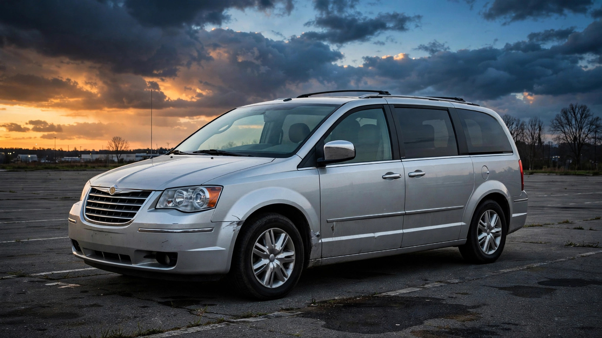

1,303 People Died in a Chrysler Town & Country. The Van That Replaced It Kills 85% Fewer.

The Chrysler Town & Country was the minivan you bought when you wanted Chrysler’s best: leather seats, Stow ’n Go, power everything, five to ten grand more than its platform twin, the Dodge Grand Caravan, which shared the same unibody, the same suspension geometry, and the same crash structure underneath the nicer trim and the name that whispered suburban safety. Over two decades of production, 1,303 people died in crashes involving a Town & Country,[1] the second-highest body count of any van in the FARS database, behind only that same Grand Caravan at 1,782.
At a fatality rate of 1.26 per 100 million vehicle miles traveled, the Town & Country kills at more than double the rate of the Honda Odyssey (0.93) and nearly triple the Toyota Sienna (0.49), both of which families cross-shopped in the same dealership lots during the same model years. The engineering gap between these vans was never generational; it was architectural, baked into the platform geometry itself.
Model year 2005 produced the single worst vintage in the dataset: 201 deaths from one production run, the highest of any minivan model year in FARS. The 2006 through 2010 vintages averaged 94 deaths apiece, a per-vintage kill rate that rivals some full-size pickup trucks. Even the final three years of production, 2014 through 2016, when Chrysler knew the platform was terminal and the Pacifica replacement was already taking shape in their engineering center, still produced 167 combined deaths, because nobody redesigned the crash structure or added meaningful reinforcement when the tooling was already paid for and the margins were locked in.
Then Chrysler built the Pacifica on a genuinely new platform with a genuinely new crash structure, and the fatality rate dropped to 0.19 per 100 million VMT. If the Town & Country’s 10.3 billion lifetime miles had been driven in Pacificas instead, the expected death toll drops from 1,303 to roughly 20, leaving 1,283 deaths attributable to a platform that Chrysler kept selling not because it was adequate but because it was profitable and nobody with a spreadsheet wanted to walk away from a fully amortized assembly line.
One statistic complicates the obvious read that cheaper buyers drive worse: the Town & Country’s driver impairment rate sits at 20.1%, while the Grand Caravan, with its lower price tag and rougher demographic profile, comes in at just 15.3%.[2] The premium badge attracted more impaired drivers, not fewer, which inverts the standard price-bracket correlation seen across the rest of the FARS dataset, and the 80% of fatal crashes that involved completely sober drivers suggest the vehicle itself was the primary variable rather than the person behind the wheel. Chrysler charged families extra for leather and Stow ’n Go without ever charging for a safer crash structure.
The IIHS said it plainly in 2025: “It’s disappointing that minivans continue to struggle to provide the best available protection for passengers in the back, considering that these are supposed to be family vehicles.”[3] Even the Pacifica only scored “Marginal” on rear-seat protection in the updated moderate overlap test. The Town & Country was never even put through it.
What to do. If you’re still driving a Town & Country, check your VIN at nhtsa.gov/recalls immediately, because the model has accumulated more open recalls than most vehicles in the FARS database. If you’re minivan shopping, the Sienna has the best aggregate safety performance in the class, followed by the Pacifica, which despite its Marginal rear-seat IIHS score is still 85% less lethal per mile than the van it replaced. Put adults in the second row whenever possible and buckle everything, because no minivan in 2026 has earned a “Good” rear-seat protection rating from the IIHS.
Limitations. FARS captures only fatal crashes, so the 1,303 figure excludes serious injuries that likely number in the tens of thousands. VMT estimates carry ±15% uncertainty for high-volume models, and the Pacifica comparison involves a newer vehicle with inherently lower fleet age, which biases toward lower rates, though the magnitude of the gap (6.6×) far exceeds what fleet age alone would explain given that the Honda Odyssey and Toyota Sienna achieved rates of 0.93 and 0.49 respectively across the same calendar period on their own aging platforms.[4]
Strongest counterargument: the Pacifica benefits from two decades of safety technology advances, including side curtain airbags, electronic stability control, and advanced high-strength steel, that simply did not exist when the Town & Country platform was born in the mid-1990s. That is a structurally fair point, but the Honda Odyssey and Toyota Sienna competed against the Town & Country across those same model years with access to the same evolving technology and still posted dramatically lower fatality rates on their own independent platforms, which means Chrysler’s peers solved this problem in real time while Chrysler kept milking a paid-off assembly line until the name itself became unsalvageable.
Sources & References
- NHTSA, Fatality Analysis Reporting System (FARS), 2014–2023. nhtsa.gov
- FARS toxicology data, 2,571 tested drivers in Town & Country fatal crashes, 2,627 tested drivers in Grand Caravan fatal crashes. BAC > 0 or drug-positive classified as impaired. cdan.dot.gov
- IIHS, “Minivans don’t make the grade when it comes to rear-seat safety,” 2025. iihs.org
- NHTS travel survey, VMT estimation methodology. nhts.ornl.gov